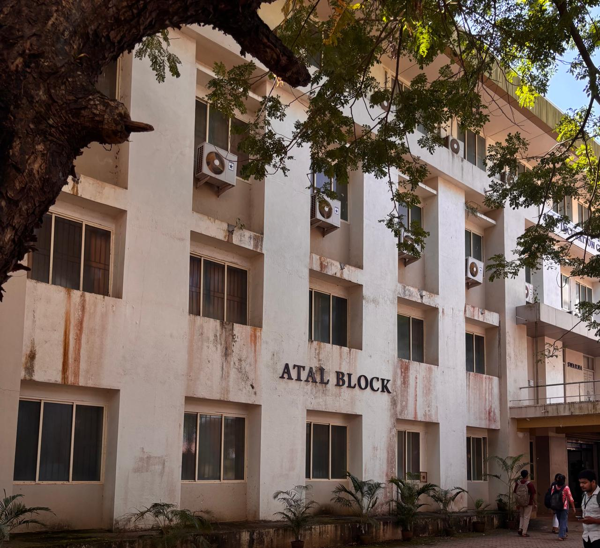

ATAL BLOCK
About the Block
The Atal Block at Nitte, located on the NMAMIT campus in Karkala, Karnataka, is home to the Atal Incubation Centre (AIC) Nitte. Established in 2020 through a collaboration between the Nitte Education Trust and NITI Aayog under the Atal Innovation Mission, this block supports startups and innovations in agriculture, biotechnology, and IT/ITC sectors.
Ground Floor: Main reception area and startup incubation offices.
1st Floor: Co-working spaces and startup workstations.
2nd Floor: Meeting rooms, innovation labs, and technical support areas.
3rd Floor: Accelerator program offices and investor meeting zones.
Facilities: Labs, Smart Classrooms, Research Centres, and Wi-Fi enabled spaces.
Location: Near the Nescafe Maggi shop